Track a real prop in 3D, replace it with a blade of light, and composite it into the shot: Kenan Proffitt’s object-tracking method, step by step.
9 illustrated stagesThree lessonsObject tracking · Object Solver · clean plate · glowPractice plate: Hollywood Camera Work
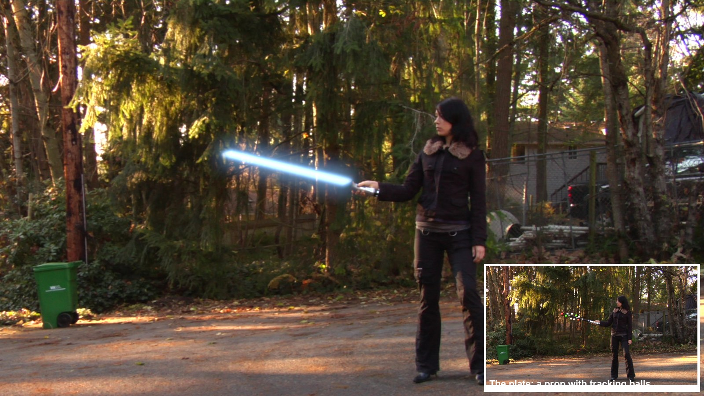
The demo shot, made in Blender with this tutorial’s steps. Plate: Hollywood Camera Work “Sword Move”.
Track. Replace. Glow.
One of the classic VFX shots. You will learn object tracking, the Object Solver constraint, render passes, a clean plate and a layered glow.
My supports
Turn on any help you want. Your teacher may have set some for you. They change how the guide helps, not what is assessed.
Shot brief
Swap the stick for a blade of light.
The plate shows an actor swinging a tracking prop. Deliver the same shot with a glowing blade locked to the hilt, the stick and balls gone, and a change of the director’s choosing.
You will hand in
A solve under 1 px (screenshot of the solve error)
The finished shot as an MP4
The director’s change, with a three-sentence explanation
Credits for the plate and the method
Footage and credits
The plate is from Hollywood Camera Work. You may use it and post your results with credit, but do not re-upload the plate itself. The method follows Kenan Proffitt’s tutorial.
Replacing a tracked prop with CG is everyday VFX work: weapons, phones, creatures on sticks. A matchmove artist tracks the prop, a CG artist builds and lights the replacement, and a compositor removes the original and blends the new one in. You do all three here.
Knowledge first
Why this works.
Rigid objects and tracking balls
A rigid prop keeps its shape, so the distances between its markers never change. Balls pointing in different directions show the solver how the prop turns in depth.
Identity matters
Each marker must stay on its own ball. A marker that jumps to a neighbour tells the solver the prop changed shape, and the 3D result collapses.
Passes and clean plates
Rendering the blade and a matte separately lets you patch the plate and add light in the compositor. A locked-off camera lets you build a clean plate from the median of the shot.
Design principles in the shot
Emphasis: the blade is the brightest thing in frame. Contrast: a cool blade against a warm forest. Movement: motion blur shows speed.
Primary achievement evidence: the director’s change (step 9). Guided steps and supports are recorded separately from achievement. Shot-library option in sprint mm12-26-s08. The registry has no VFX skill IDs yet; see the animation skills proposal.
Session A · Lesson 1 · VFX shot library
Track the prop.
An actor swings a stick covered in tracking balls. You will make Blender follow that stick in 3D, then swap it for a blade of light.
TODAYWatch and plan (15 min), tracking object and markers (25 min), track the whole shot (25 min).
01
Watch the method and study the plate
Start here: read or listen to the theory deck (about 10 minutes, with checkpoint questions), then come back.
IN SHORTWatch the demo and Kenan’s video; download the plate; study the prop; count balls.
READ ALOUD
DOCUMENT: Kenan Proffitt’s tutorial · the Sword Move plate SELECT: The prop and its tracking balls TOOLS / ROUTE: Watch · download · look closely
Play the demo shot (below), then watch Kenan Proffitt’s 8-minute object-tracking tutorial. List his five steps.
Download the Sword Move plate from Hollywood Camera Work (link in Sources) and unzip it into your project folder.
Scrub the frames. The camera is locked off; only the prop moves.
Look at the prop: a silver hilt, a black stick, and balls on short rods pointing in different directions.
Count the balls you can see in three different frames. You need at least 8 visible at once.
1–2 · Track and solve
Markers on the prop, then Solve Object Motion.
3 · Model and render
A blade that follows the solve; transparent film; motion blur.
4–5 · Composite and roto
Patch out the prop, add the blade and its glow.
The demo shot (real Blender render, 9 seconds). Plate: Hollywood Camera Work.
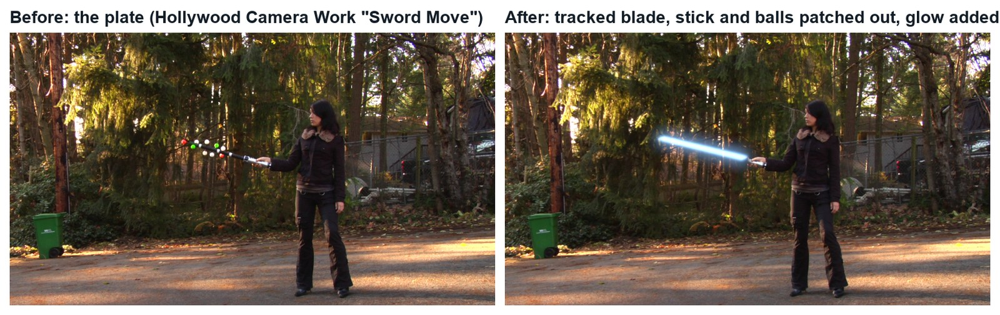
Real frames: the plate, and the same frame with the tracked blade.
Object tracking: Working out how one object moved in 3D from video
Locked-off: A camera that does not move
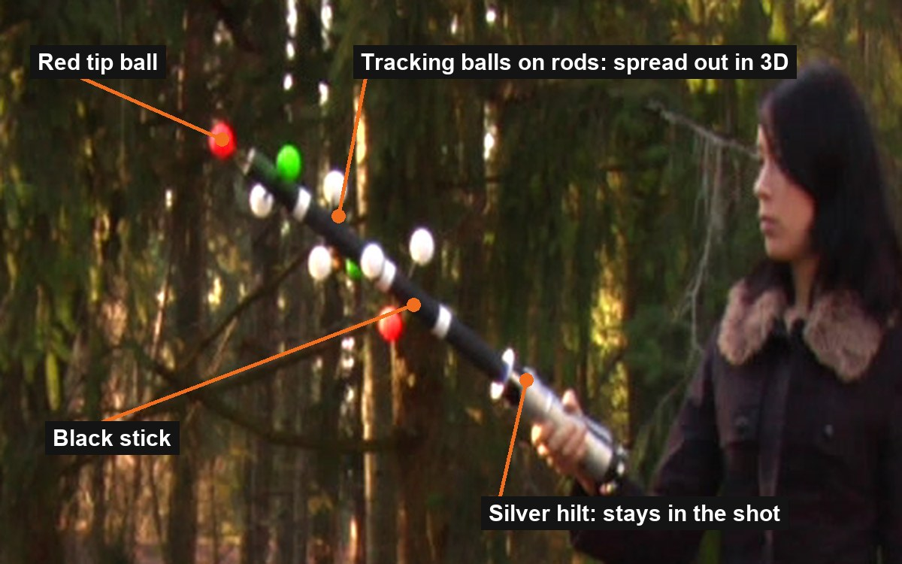
The prop in the practice plate: the balls stick out in different directions, so Blender can work out the prop’s rotation in 3D.
WHYCamera tracking finds how the camera moved. Object tracking finds how one object moved. The balls are spread out in 3D so the solver can tell a turn from a tilt.
CHECKThe plate in your project folder, Kenan’s five steps listed, and a ball count for three frames.
FIXPlate won’t download at school? Ask your teacher for the class copy.
WORKED EXAMPLE · DIFFERENT OBJECTThe demo plate is 223 frames, 1280 × 1080 with pixel aspect 1.5.
STRETCH (AFTER THE CHECK PASSES)Sketch the blade colour and length you want.
Method basis: K1 · H1. Values and sequence are authored for this project.
02
Make a tracking object and put markers on the balls
IN SHORTMotion Tracking workspace; open plate; pixel aspect; Objects › + Sword; settings; Ctrl+click 8+ balls.
READ ALOUD
DOCUMENT: Sword_YourName.blend · the plate SELECT: Movie Clip Editor, a tracking object called Sword TOOLS / ROUTE: Motion Tracking workspace · Track › Objects › + · Ctrl+click
New file. Add the Motion Tracking workspace (+ › VFX › Motion Tracking). Open the first plate image, click Set Scene Frames and Prefetch.
Sidebar › Track › Camera: Pixel Aspect 1.5 for this plate.
Sidebar › Track › Objects: click + and rename the new object Sword. Keep it selected: new markers now belong to the Sword, not the camera.
Tracking Settings: Pattern Size about 21, Search Size about 180 (the prop moves fast), Motion Model Location, Prepass and Normalize on.
Go to a frame where the prop is clear. Ctrl+click a marker on the centre of each ball: at least 8, and include the red tip ball.
Click by click (real Blender screenshots)
Sidebar › Track › Objects: the list shows Camera and your new Sword object. Select Sword before adding markers.
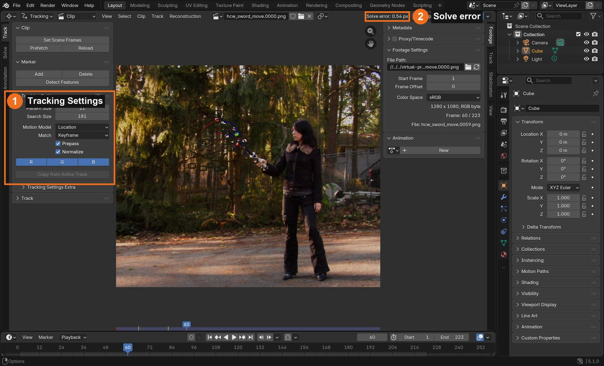
The Clip Editor in Tracking mode: Tracking Settings on the left (1); the solve error appears at the top (2) after you solve.
STEP CHECKLIST
GLOSSARY
Tracking object: A named group of markers that Blender solves as one moving object
Rigid: Something that keeps its shape while it moves
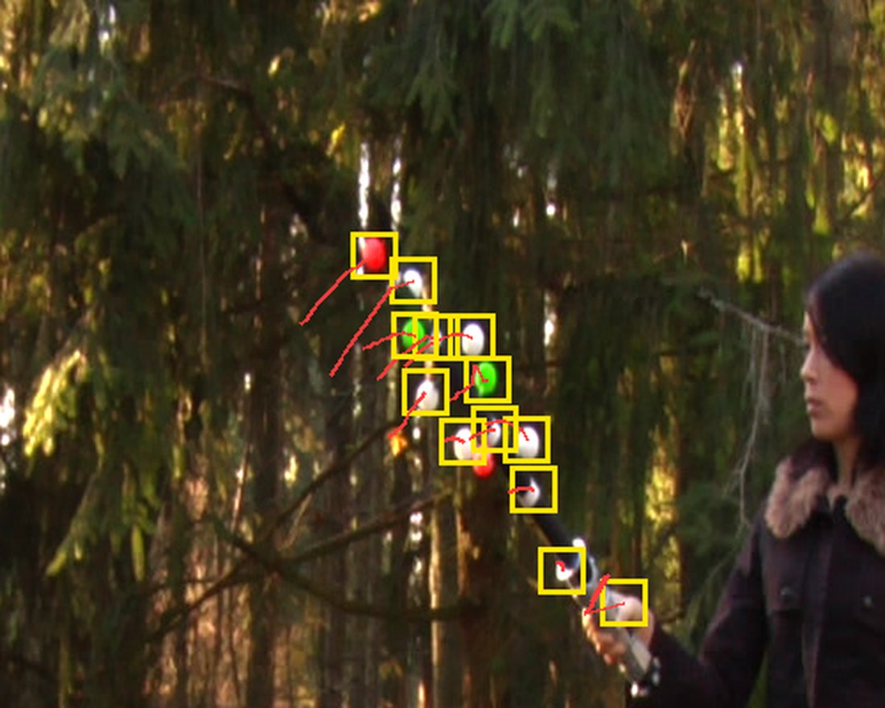
Markers on the balls in the demo at frame 60 (yellow), with the path each one took over the previous 14 frames (red).
WHYMarkers that belong to a tracking object are solved as one rigid thing. Eight or more, spread around the prop, give the solver enough to work with.
CHECKA tracking object called Sword with at least 8 markers, each centred on a ball.
FIXMarkers appear under Camera instead? Select Sword in the Objects list, then add markers again.
WORKED EXAMPLE · DIFFERENT OBJECTThe demo used every ball it could see: about 12 at a time.
STRETCH (AFTER THE CHECK PASSES)Add two markers on the silver hilt as well.
Method basis: K1 · B1. Values and sequence are authored for this project.
03
Track every marker through the shot and fix the slips
IN SHORTCtrl+T; fix slips with G; end markers on hidden balls; never swap balls; 8+ per frame.
READ ALOUD
DOCUMENT: Sword_YourName.blend SELECT: All Sword markers TOOLS / ROUTE: Ctrl+T track forward · Shift+Ctrl+T backward · Alt+→ one frame · G to fix · L to centre
Select all markers (A) and press Ctrl+T. Watch: they will stop or slip when the prop swings fast.
When a marker slips, go back to the last good frame, press G to move it back onto its ball, and track on. Use Alt+→ to track one frame at a time through fast parts.
When a ball is hidden behind the stick, let its marker end. Add a new marker when the ball reappears.
Never let a marker jump to a different ball. Two white balls look the same to the tracker, so check them most.
Finish with at least 8 markers on every frame.
What went wrong when we built the demo: our first automatic linking let markers swap between identical white balls. The solve looked fine on paper (5 px) but the 3D shape came out flat and the blade pointed the wrong way. Linking each ball only to its nearest position in the next frame fixed it: 0.54 px.
STEP CHECKLIST
GLOSSARY
Slip: When a marker drifts off the point it should follow
Occluded: Hidden behind something
WHYA marker on the wrong ball is worse than no marker: it tells the solver the prop bent. Careful hand-checking here is what makes the solve work.
CHECKTracks for the whole shot, at least 8 at any frame, with no marker ever changing ball.
FIXMarkers lose the ball on fast frames? Raise Search Size, or step one frame at a time with Alt+→ and nudge with G.
WORKED EXAMPLE · DIFFERENT OBJECTIn the demo the prop moves 3–10 pixels per frame; balls are about 30 pixels apart.
STRETCH (AFTER THE CHECK PASSES)Lock finished tracks (Ctrl+L) so you cannot move them by accident.
Method basis: K1 · B1. Values and sequence are authored for this project.
Session B · Lesson 2 · VFX shot library
Solve it. Build the blade.
Turn the 2D tracks into 3D motion, then make a blade that follows it.
TODAYSolve under 1 px (25 min), scene and constraint (25 min), blade material and render settings (15 min).
04
Solve the object motion to under 1 pixel
Recall first (from last lesson, no peeking):
Why do the tracking balls point in different directions?
What goes wrong if a marker jumps to another ball?
Which panel lists the tracking objects, and which one must be selected before you add markers?
Say or write your answers, then check them against your file.
IN SHORTSword active; keyframes with clear rotation; Solve Object Motion; clean worst tracks; under 1 px.
READ ALOUD
DOCUMENT: Sword_YourName.blend SELECT: Solve tab, with Sword active TOOLS / ROUTE: Solve › Keyframe A / B · Solve Object Motion · Clean Up
With Sword selected in Objects, open the Solve tab. The button now reads Solve Object Motion.
Turn off automatic Keyframe selection. Choose Keyframe A and B where the prop has clearly rotated between them and at least 8 markers exist on both (the demo used 20 and 45).
Click Solve Object Motion and read the Solve error.
Above 1 px? Clean Up › Clean Tracks with Error 2, look at what it selected, fix or delete those tracks, and solve again.
Try a different Focal Length under Track › Camera if the error will not drop (the demo solved best at 85 mm).
Click by click (real Blender screenshots)
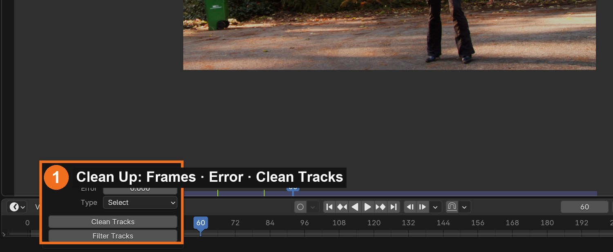
Solve tab › Clean Up: set Frames or Error, choose Select, and click Clean Tracks to see which tracks are worst.
STEP CHECKLIST
GLOSSARY
Solve error: Average tracking error in pixels; lower is better
Keyframes A and B: The two frames the solver starts from
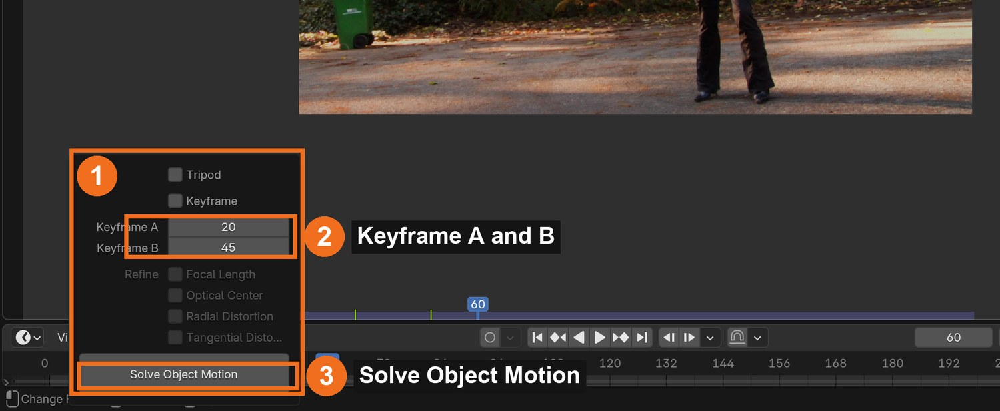
Real screenshot with Sword active: keyframes A and B (2) and Solve Object Motion (3).
WHYThe solver needs two frames where the prop is seen from clearly different angles. That difference is what reveals its 3D shape.
CHECKA solve error under 1.0 px with markers still covering the whole shot.
FIXError huge? One marker is on the wrong ball: find the track with the biggest error and check it frame by frame.
WORKED EXAMPLE · DIFFERENT OBJECTThe demo: 0.76 px on the first solve, 0.54 px after removing the worst tracks.
STRETCH (AFTER THE CHECK PASSES)Compare three focal lengths and record each error.
Method basis: B3 · K1. Values and sequence are authored for this project.
05
Set up the scene and make the blade follow the solve
IN SHORTSetup Tracking Scene; Empty + Object Solver (Sword, Camera); cylinder aligned to the stick; parent; play.
READ ALOUD
DOCUMENT: Sword_YourName.blend SELECT: A camera, an Empty with an Object Solver constraint, a cylinder TOOLS / ROUTE: Scene Setup · Add › Empty · Object Constraints › Object Solver · Set Inverse
Solve tab › Scene Setup: click Set as Background, then Setup Tracking Scene. Delete the test cube and ground.
Layout workspace, camera view (Numpad 0). You see the plate behind the 3D scene, and small dots where the solved markers are.
Add › Empty. In Object Constraint properties add Object Solver. Set Object to Sword and Camera to the scene camera. Click Set Inverse if the Empty jumps.
Add a thin cylinder for the blade. Line it up with the black stick and the marker dots, from the top of the silver hilt to just past the red tip. Parent it to the Empty.
Press Spacebar. The blade should stay locked to the prop through the whole swing.
Click by click (real Blender screenshots)
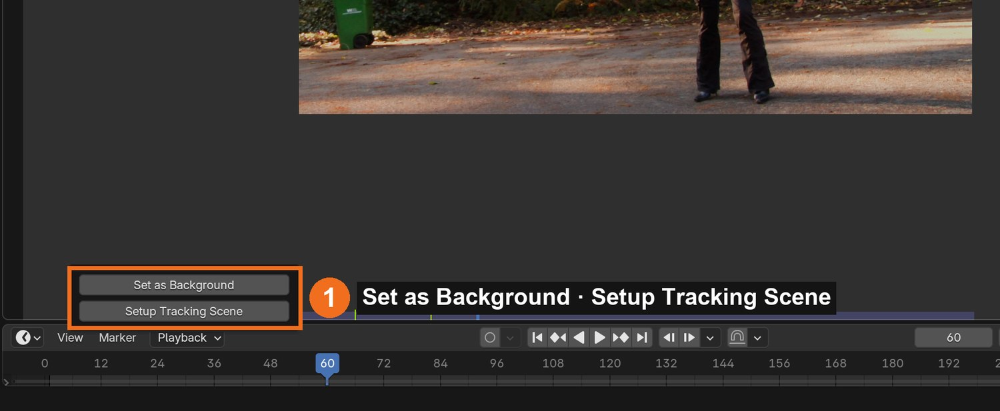
Solve tab › Scene Setup: Set as Background, then Setup Tracking Scene.
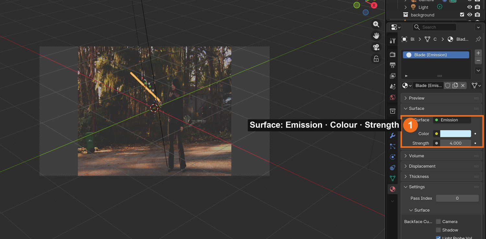
Camera view with the blade over the plate. Material properties: Surface set to Emission, with Colour and Strength.
STEP CHECKLIST
GLOSSARY
Object Solver: The constraint that makes an object follow a solved tracking object
Set Inverse: Stores the offset so the object does not jump when the constraint is added
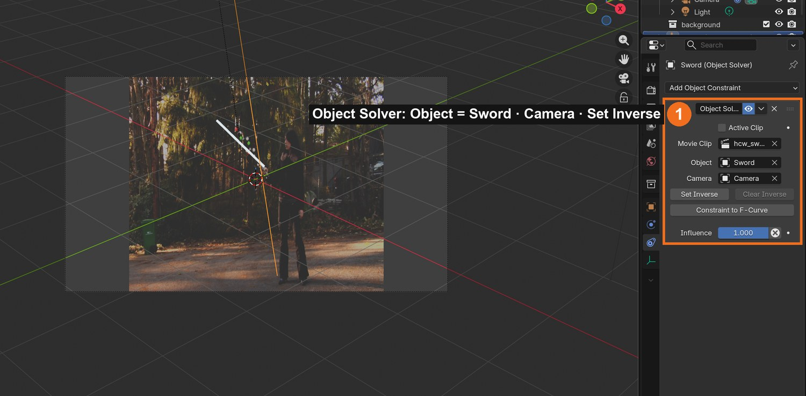
Real screenshot: the Object Solver constraint on the Empty, with Object set to Sword and the Camera chosen. The blade follows the prop in the camera view.
WHYThe Object Solver constraint plays the solved motion back on a Blender object. Anything parented to that object moves exactly like the real prop.
CHECKA blade that stays on the prop for the whole shot when you play it in camera view.
FIXBlade flies away? Click Set Inverse on the constraint, then reposition the blade. Blade drifts in some frames? The solve error is too high there: go back and fix those tracks.
WORKED EXAMPLE · DIFFERENT OBJECTThe demo blade runs from the hilt top to 28 % past the tip ball.
STRETCH (AFTER THE CHECK PASSES)Append a detailed hilt model and line it up with the real hilt.
Method basis: B2 · K1. Values and sequence are authored for this project.
06
Give the blade light and set the render up
IN SHORTEmission blade; transparent film; motion blur; fat matte copy; two RGBA sequences.
Blade material: Surface › Emission, white, Strength about 2. The colour comes later, in the glow.
Render properties: open Film and tick Transparent, so only the blade renders, with a clear background.
Tick Motion Blur. A fast swing then smears like a real blade.
Duplicate the blade, scale it fat enough to cover the stick and every ball, and give it a plain white emission. This is your matte.
Render the animation twice as PNG sequences with RGBA: once with only the blade visible, once with only the matte.
Click by click (real Blender screenshots)
Render properties: tick Motion Blur (1) and open Film to tick Transparent (2).
STEP CHECKLIST
GLOSSARY
Render pass: One layer of a shot rendered on its own
Motion blur: The smear a fast-moving thing leaves in one frame
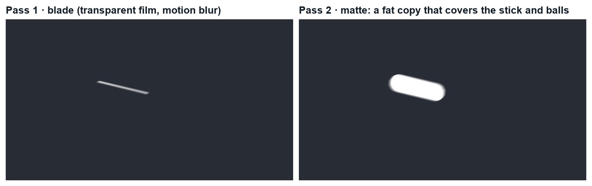
Real renders of frame 136: the blade pass, and the matte pass that covers the stick and balls.
WHYRendering in passes keeps each job separate: one image for the light, one for the area to hide. The compositor then combines them with the plate.
CHECKTwo PNG sequences with transparent backgrounds: blade and matte.
FIXBackground renders black, not clear? Film › Transparent is off, or the file format is not RGBA.
WORKED EXAMPLE · DIFFERENT OBJECTThe demo blade is 2 % of its length in radius; the matte is wide enough to cover the furthest ball.
STRETCH (AFTER THE CHECK PASSES)Render a third pass: a red blade for a second colourway.
Method basis: K1. Values and sequence are authored for this project.
Session C · Lesson 3 · VFX shot library
Composite it. Then the director changes it.
Hide the prop, add the blade and its glow, then deliver a change on your own.
TODAYClean plate and patch (20 min), blade and glow (20 min), director’s change and render (25 min).
07
Make a clean plate and patch out the prop
Recall first (from last lesson, no peeking):
What solve error is good enough?
Which constraint makes the blade follow the prop?
Why render the blade and the matte as separate passes?
Say or write your answers, then check them against your file.
IN SHORTMedian clean plate; plate + clean + matte in the compositor; Mix by the matte; check the hand.
READ ALOUD
DOCUMENT: The plate · Photoshop or Blender SELECT: A clean plate; the matte pass TOOLS / ROUTE: Photoshop: File › Scripts › Statistics › Median · Compositor: Mix by the matte
Because the camera is locked off, you can make a clean plate: the background with no prop. In Photoshop choose File › Scripts › Statistics, Stack Mode Median, and load about 20 frames spread across the shot. Save the result as a PNG.
Blender Compositing workspace: add the plate (Movie Clip or Image sequence), the clean plate (Image) and the matte pass (Image sequence).
Add a Mix node. Plug the plate into A, the clean plate into B, and the matte’s alpha (blurred a few pixels) into Factor.
Connect a Viewer node and scrub: the stick and balls disappear, and her hand and the silver hilt stay.
If the patch covers her hand, start the matte a little further up the stick.
STEP CHECKLIST
GLOSSARY
Clean plate: The background with the unwanted thing removed
Median: The middle value: what a pixel shows most of the time
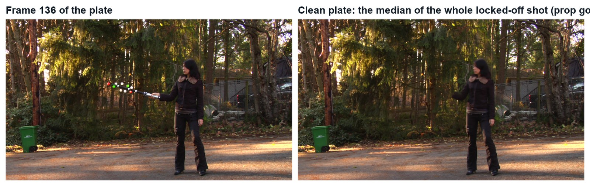
Real images: a frame of the plate, and the clean plate made from the median of the whole shot. The prop has vanished.
WHYThe median of many frames keeps whatever is there most of the time: the background. The moving prop is only in each spot briefly, so it drops out.
CHECKA composite where the stick and balls are gone for the whole shot and the hand is untouched.
FIXGhost of the prop in the clean plate? Use more frames, or frames spread further apart. Patch edge visible? Blur the matte a little more.
WORKED EXAMPLE · DIFFERENT OBJECTThe demo clean plate used 38 frames (every sixth frame).
STRETCH (AFTER THE CHECK PASSES)Kenan’s version: roto the hand with a mask so a CG hilt can sit inside the fist.
Method basis: B4 · K1. Values and sequence are authored for this project.
08
Add the blade and build the glow
IN SHORTTwo blurred copies; tint; Add onto the plate; Alpha Over the core; check; render.
Add the blade pass. Make two copies of it with Blur nodes: one small (about 16 px) and one wide (about 70 px).
Tint each blurred copy with a Mix node set to Multiply and a bright blade colour.
Add them onto your patched plate with two Mix nodes set to Add: tight halo first, wide halo second.
Put the sharp white blade on top with an Alpha Over node (Background: your result so far; Foreground: the blade pass).
Check three frames across the shot, then render the animation.
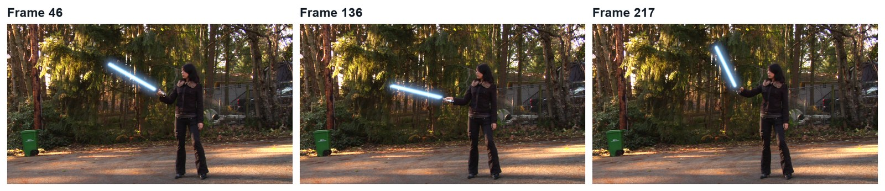
Three real frames from the finished demo.
What went wrong when we built the demo: our first composite came out white because Alpha Over’s inputs are Background, Foreground, Factor, in that order, and they were plugged one slot off. And at half resolution the blade floated away from the prop, because only the plate had been scaled. Check the Viewer at each node.
STEP CHECKLIST
GLOSSARY
Alpha Over: The node that places a foreground with transparency over a background
Halo: The soft glow around a bright light
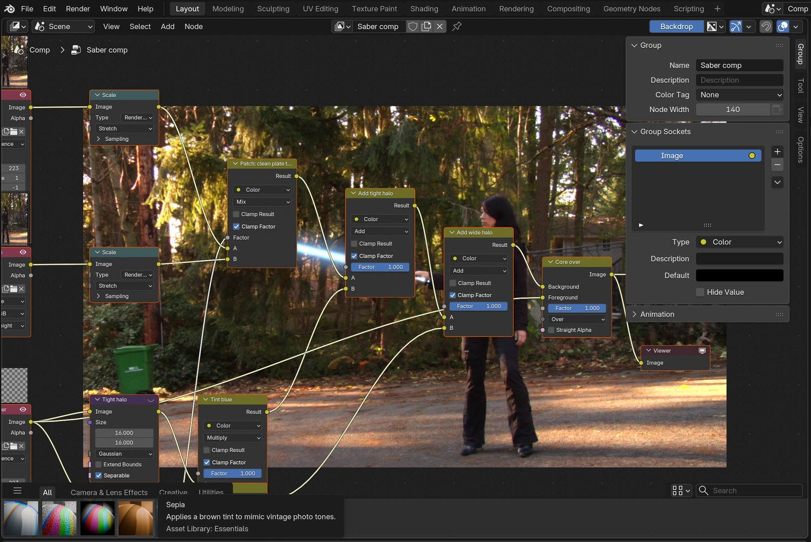
Real screenshot of the demo node tree: plate and clean plate mixed by the matte, two tinted halos added, then the white core over the top.
WHYA light-sword reads as a white-hot core with a coloured halo. Building the halo from blurred copies gives you separate control of core, colour and spread.
CHECKA blade with a white core and a coloured glow that sits on the hilt through the whole shot.
FIXGlow looks white, not coloured? Lower the blade’s emission strength and raise the tint. Picture goes white? Check Alpha Over: Background first, Foreground second.
WORKED EXAMPLE · DIFFERENT OBJECTDemo halos: 16 px at 5× and 70 px at 2.6× of the blade colour (0.25, 0.55, 1.0).
STRETCH (AFTER THE CHECK PASSES)Add a faint coloured light on her jacket when the blade passes close.
Method basis: K1. Values and sequence are authored for this project.
09
Practical check: the director’s change, then render and defend
IN SHORTRead the card; pick the stage; change a copy; render; defend; credit.
READ ALOUD
DOCUMENT: Your shot · the director’s card SELECT: Whatever the card requires TOOLS / ROUTE: Your own decisions
Read your director’s card (below).
Decide which stage it touches: tracking, model, render or composite. Change as little as possible.
Make the change in a copy of your file and render the shot (FFmpeg, H.264).
Screen it and explain one tracking choice and one compositing choice.
Credit the plate (Hollywood Camera Work) and the method (Kenan Proffitt) in your evidence.
Card
The director says
1 · Red
“Villain version: a red blade with a wider, angrier glow.”
2 · Ignite
“The blade switches on at frame 40: it grows from the hilt.”
3 · Double
“Double-bladed: a second blade out of the bottom of the hilt.”
4 · Flicker
“It is damaged: the blade flickers and drops out twice.”
Independent evidence: the main achievement evidence for this tutorial.
STEP CHECKLIST
GLOSSARY
Colourway: A version of a design in a different colour
WHYA shot built in stages can be changed without starting again. Knowing which stage to open is the professional skill.
CHECKA changed shot that meets the card, rendered, with an explanation and credits.
FIXStuck? Name the stage the card touches first. (Independent step: the Coach can explain tools but not decide your changes.)
WORKED EXAMPLE · DIFFERENT OBJECTWorked example on a different shot: a “make it flicker” card only needed two keyframes on the glow’s Factor.
STRETCH (AFTER THE CHECK PASSES)Take two cards at once.
Method basis: K1. Values and sequence are authored for this project.
Before you submit
Student QA.
Evidence conversation
Keep it short and specific.
SENTENCE FRAMESMy solve error was ___ after I ___. · I removed the prop by ___. · For the director’s card I changed the ___ stage using ___.
Figures marked Illustration are drawn, not screenshots. Step values are starting points authored for this project. Draft for teacher review; not yet classroom-piloted.